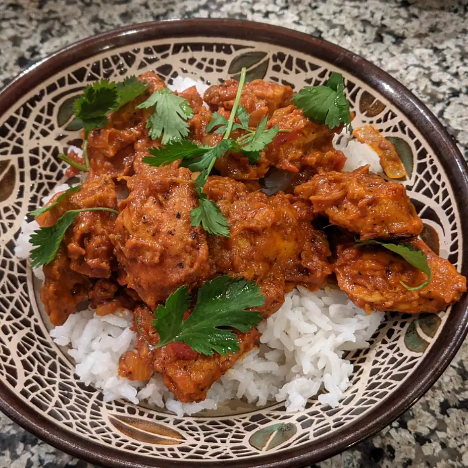

Authentic Chicken Tikka Masala
Popular throughout the world, Great Britain's national dish is the perfect blend of Indian and Western Cuisine. With a magnificent chicken marinade, a creamy sauce, and a variety of spices this dish has a real kick to it. So delicious that you'll keep coming back for more.
*Serves 4 people
Ingredients
- 1/4 cup plain yogurt
- 2 teaspoons garam masala
- 2 teaspoons paprika
- 1/2 teaspoon freshly ground black pepper
- 1/2 teaspoon salt
- 1/2 teaspoon cayenne pepper
- 1/2 teaspoon ground coriander
- 1 pound skinless, boneless chicken breast-cut into 1-inch strips
- 3 tablespoons vegetable oil
- 1 teaspoon cumin seeds
- 1 large onion,chopped
- 3 cloves garlic, minced
- 1 tablespoon grated fresh ginger
- 2 green chile peppers, minced
- 2 Roma tomatoes, diced
- 1/2 cup tomato paste
- 1/4 cup water
- 1 teaspoon garam masala
- 1/2 teaspoon ground tumeric
- 1/2 teaspoon salt, or to taste
- 1/2 bunch cilantro for garnish
Directions
- Combine yogurt, 2 teaspoons garam masala, paprika, black pepper, 1/2 teaspoon salt, cayenne pepper, and 1/2 teaspoon coriander in a large bowl. Add chicken strips and toss to coat. Cover and marinate in the refrigerator for 2 hours.
- Preheat oven to 450 degrees F. Grease a baking sheet.
- Place chicken strips on the prepared baking sheet, leaving space between each piece, and bake in the preheated oven until browned and no longer pink inside, about 10 minutes. Remove and set aside.
- Heat vegetable oil in a large skillet over medium heat. Cook and stir cumin seeds until lightly toasted and aromatic, about 3 minutes. Add onion; cook and stir until onion begins to soften, 4 to 5 minutes. Stir in garlic, ginger, and green chiles and continue to cook until onion is browned, 15 to 20 minutes. Cook and stir tomatoes, tomato paste, and water into onion mixture until tomatoes begin to break down and incorporate into the onion mixture, about 10 minutes.
- Cook and stir 1 teaspoon garam masala, 1/2 teaspoon coriander, and turmeric into the tomato mixture. Mix in the cooked chicken, add cream, and stir to coat. Cover and let simmer for 10 minutes. Season with 1/2 teaspoon salt and garnish with cilantro.
Acknowledgments: